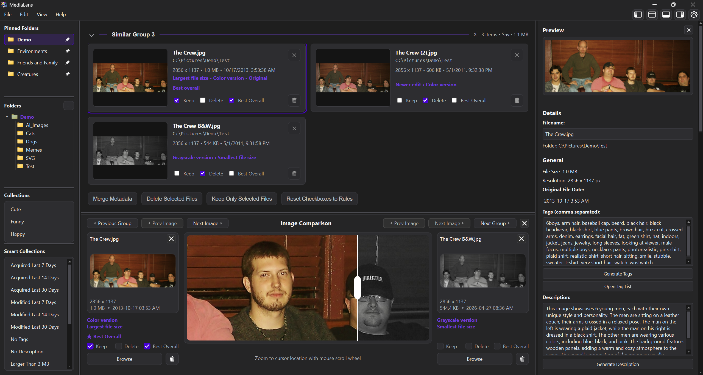
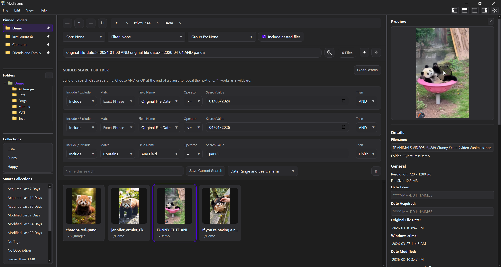
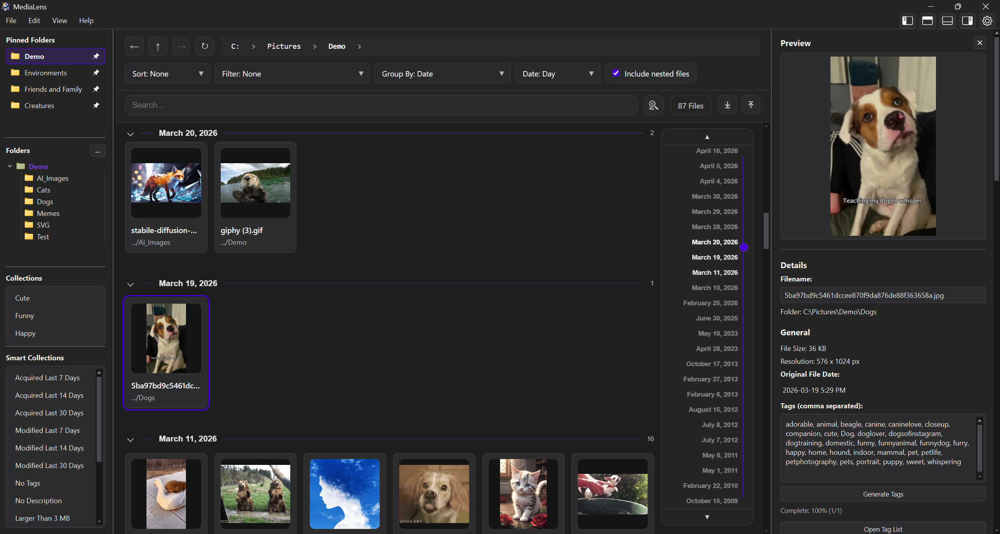
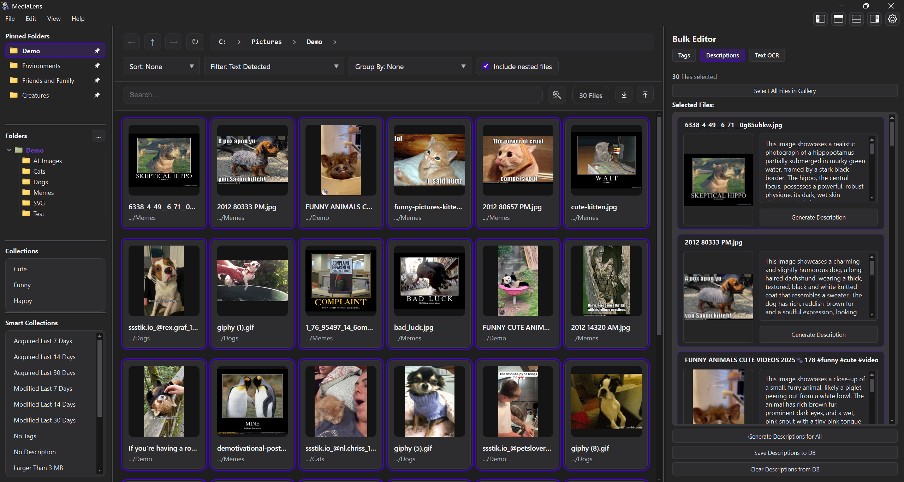
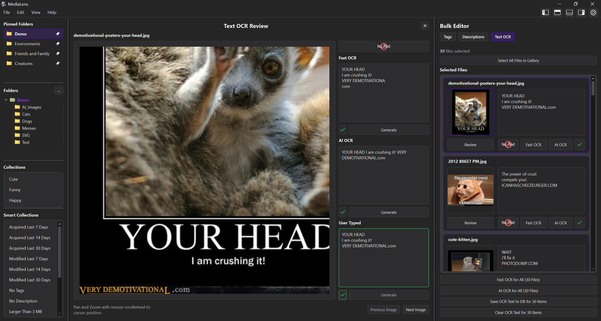

Scan a folder
MediaLens groups duplicates and visual variants across the active library scope.
Windows desktop app for large visual libraries
Clean up duplicate and similar images with confidence, inspect every difference, then keep organizing with fast search, bulk editing, OCR, metadata, local AI, and portable library backups.
The difference is visible
MediaLens groups exact duplicates and close variants, then explains what changed so cleanup decisions are reviewable instead of risky. Recent releases also make review updates appear sooner during larger cleanup sessions.

Cleanup flow
MediaLens groups duplicates and visual variants across the active library scope.
Cards call out meaningful differences like newest edit, crop, color, file size, format, and metadata richness.
Use rules, manual choices, metadata merge, retention, or per-group decisions before files move.
Beyond duplicate cleanup
After cleanup, MediaLens becomes a fast media command center for search, tags, AI metadata, dates, collections, backups, and high-volume browsing.




Local AI workspace
Optional local models can generate tags, descriptions, and higher-accuracy OCR. Model setup stays explicit, status details stay visible, and results remain editable before they become library data.
Product depth
Switch between the workspaces that matter most: duplicate review, comparison, tagging, descriptions, OCR, search, metadata, settings, and timeline browsing.

Designed for
Get MediaLens
Easy to use setup file. Install, choose a folder, and start reviewing your media library with full control.